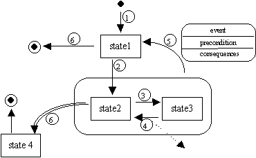

State Transition Diagrams STDs

A state is a location in the behavioural space of an interface which is functionally and
visually distinct. States are connected by transitions which have associated events,
preconditions and consequences.
Initial and terminal states are shown as solid and dotted circles respectively. A group
of states can be bounded, with a rounded box, with any originating transitions applying
to each contained state.
A transition can cause an event to be dispatched from this part of the interface, shown as
a dotted line leaving the STD.
A double lined transition arrow indicates that multiple instances of the state are possible.